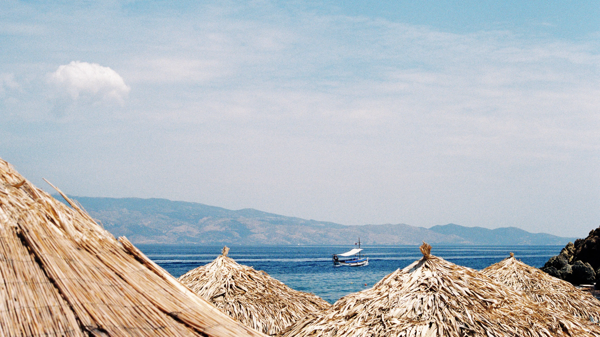
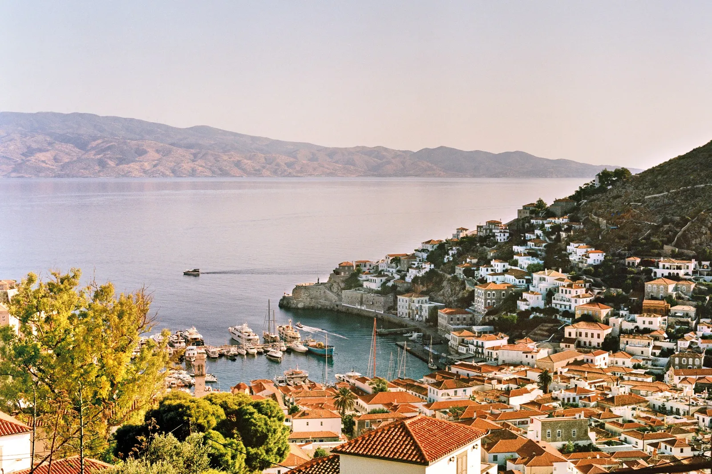
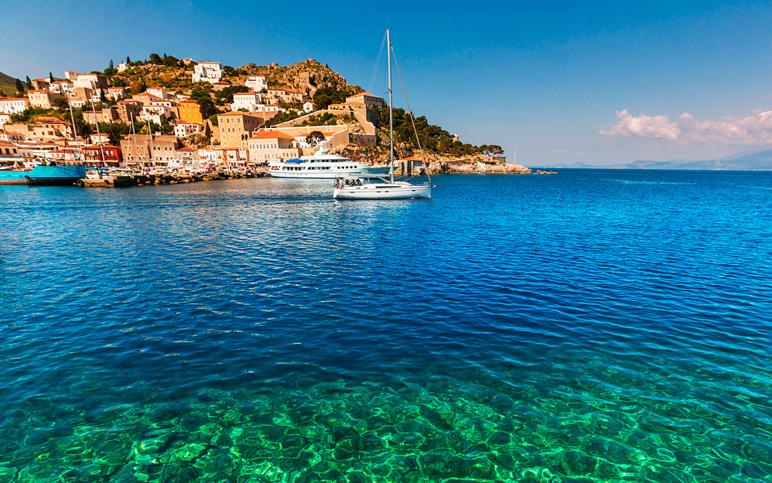
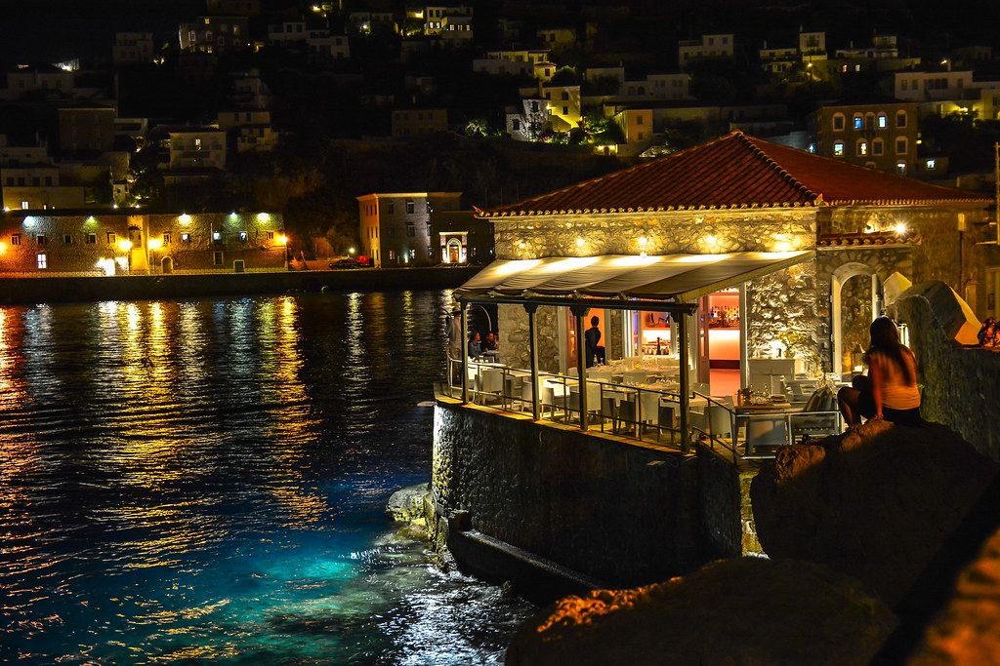
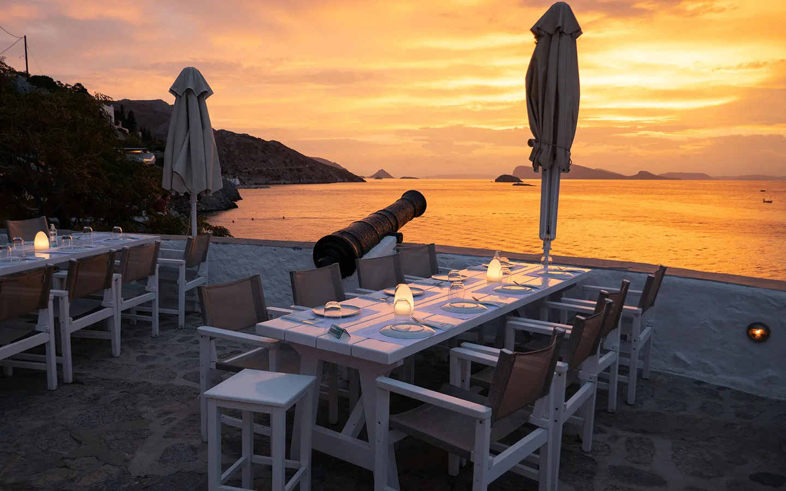

Travel to Hydra, Greece
Welcome to Hydra, Greece
Scroll this page to decide if Hydra, Greece is your next Europe Destination!

Hydra is apart of the Saronic Islands of Greece. It is the closest island to Athens, which makes a great place for tourists to go.

History of Hydra
Hydra, Greece, has a captivating history that mirrors it's stunning landscapes. This island, located in the Aegean Sea, has a rich heritage that dates back centuries. During the 18th and 19th centuries, Hydra became a strong naval power, it's ships dominating the Mediterranean trade routes. The island played a pivotal role in the Greek War of Independence, offering support and inspiring numerous heroic tales.
Today, the historical charm of Hydra is reflected through its preserved architecture, cobblestone streets, and museums that honor it's past. Visitors can explore this living history while indulging in the island's beauty and vibrant culture, making Hydra a unique destination that seamlessly blends its rich past with modern allure. Hydra has also banned all cars and motor vehicles to preserve it's natural state. This carless island has so much to discover!

Beaches to Explore
Hydra is a haven for beach enthusiasts, offering a variety of different beaches to explore. If you enjoy a hidden gems of beaches that are secluded from the main land, explore Avlaki andVlychos, where tranquility and nature combine. If you love the bustling waterfront scene of Hydra's Town, where cafes line the coast, explore Hydra's port. There's a beach for everyone! Dive into the crystal-clear waters, soak up the Mediterranean sun, and discover the sheer beauty that Hydra's beaches have to offer. Whether you seek serenity or seaside charm, Hydra's shores have something special in store for you.

The Exciting Night Life in Hydra
Hydra comes alive in the night with an enchanting nightlife experience. As the sun sets behind the picturesque harbor, the island transforms into a vibrant hub of fun. Discover cozy taverns, lively bars, and inviting cafes.
The nightlife on Hydra is known for its relaxed yet lively atmosphere, where you can enjoy traditional Greek music, taste local cuisine, and chat with both locals and fellow travelers. There's something magical about sipping a cocktail under the starry sky while listening to the soothing sounds of the Aegean Sea. Whether you prefer a quiet evening or a exciting night on the town, Hydra offers a nightlife scene that suits all tastes.

If you are considering traveling to Hydra, we want to make your trip as smooth as possible. Our team has created a place where you can find budget hotels, less expensive flights, and cheap things to do in Hydra!
Click Here to budget your next trip to Hydra